class: center, middle # Workshop: Augmenting Research Workflows with LLMs --- # Slack channel - [Slack channel for the workshop](https://join.slack.com/share/enQtNzY1NjMxODg1MjQzNC0xNzI2MzllN2VhNWU0YmNkNTQ3ZGMxZDgwODU3MWU4YWRiNWRkZGMxZmEwNjVjNDA1MjNkZGEyMGRkODIyY2Fl) <div style="display: flex; justify-content: center;"> </div> --- # Github Repo - [Github Repo for the workshop](https://github.com/EnkrateiaLucca/osdc-workshop) <div style="display: flex; justify-content: center;"> </div> --- # Slack channel and Github Repo <div style="display: flex; justify-content: center;"> </div> --- # Agenda 1. What are the LLM Tangibles? 2. Cool LLM-based UI Patterns 3. Level 0: Prompts for Better Research Workflows 4. Level 1: Pydantic & Data Structures for Research Primitives 5. Cool extra stuff for fun! (level 2 agentic workflows + cool tools) 6. Conclusing thoughts --- # What are the LLM Tangibles? 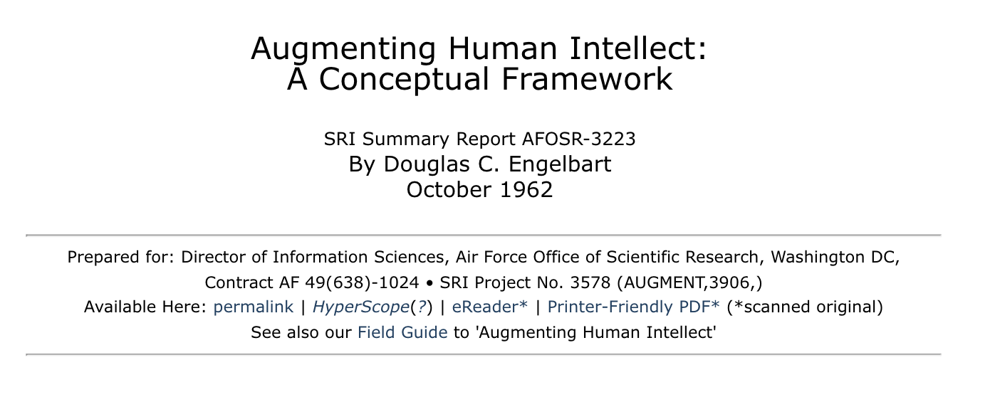 --- # Augmentation = Enhancing Capability Through Tools 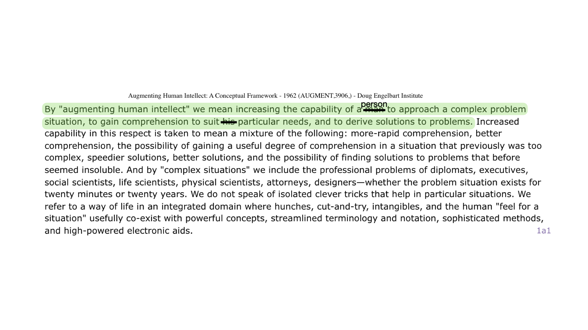 ??? - Are these models crippling our abilities to understand the world by replacing the cognitive effort of understanding with the cognitive efforts, or are they amplifying. - --- # Augmentation = Enhancing Capability Through Tools 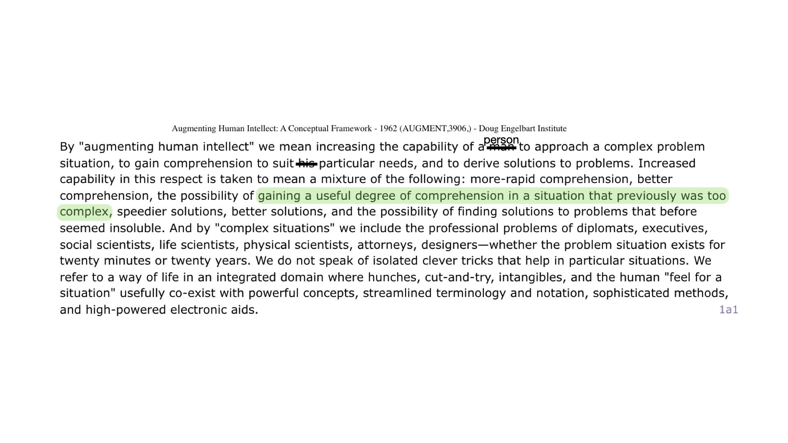 --- # Augmentation = Enhancing Capability Through Tools 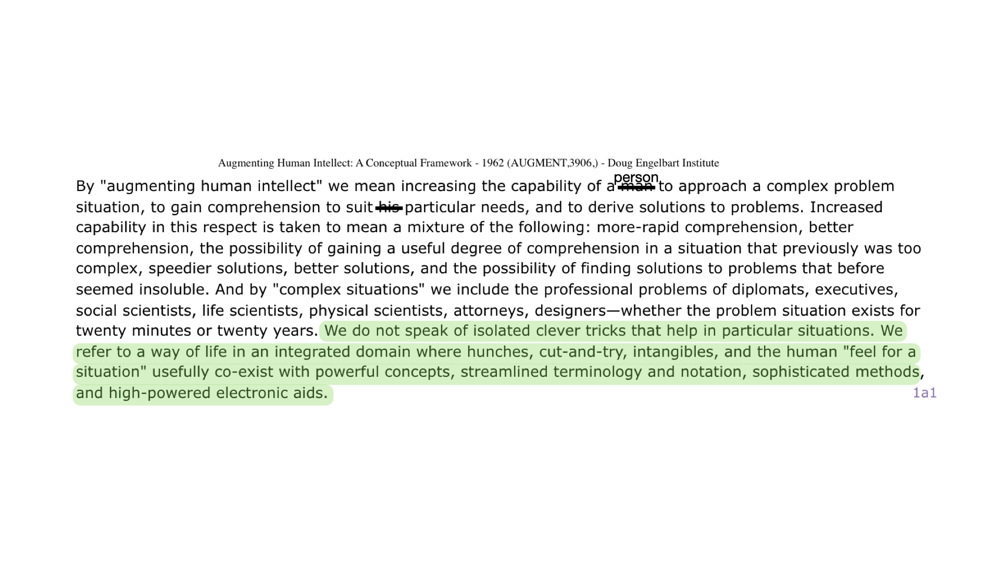 --- --- class: center, middle # LLM Tangibles? What are the LLM 'tangibles' we should learn? --- class: center, middle # First, some cool LLM-based UI Patterns --- # Elicit Tables UI <div style="display: flex; justify-content: center;"> 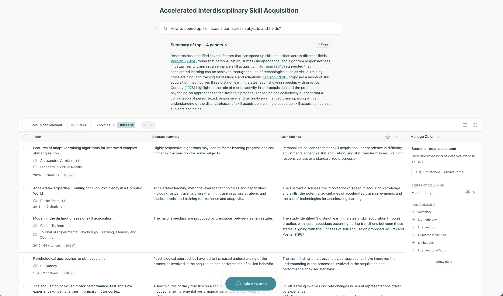 </div> --- <div style="display: flex; justify-content: center;"> 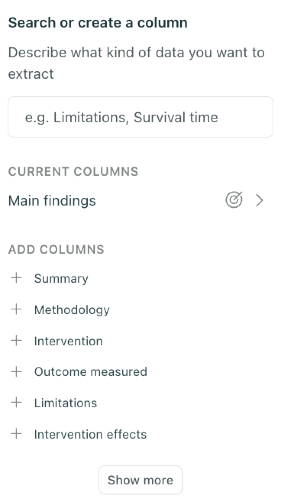 </div> ??? Packaging functionality under prompts to LLMs as utility functions, hiding away some unnecessary complexity so that users can care about what matters. --- # Semantic Zoom <div style="display: flex; justify-content: center;"> 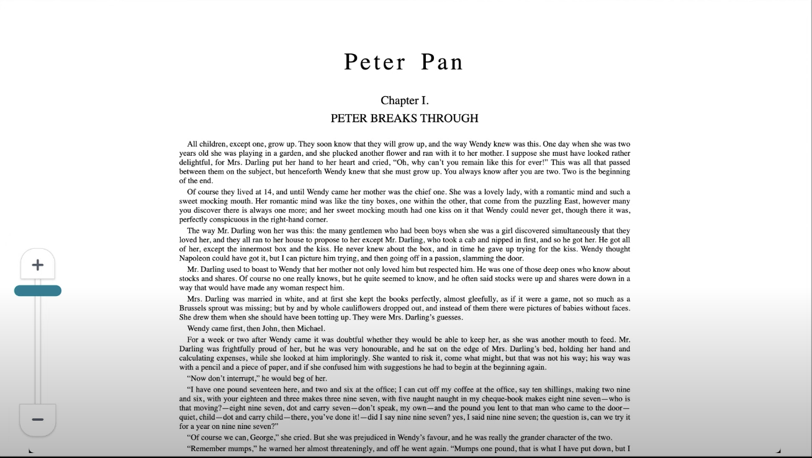 </div> <p style="font-size: 14px;"> <a href='https://www.youtube.com/watch?v=PAy_GHUAICw'>Climbing the Ladder of Abstraction: Amelia Wattenberger</a> </p> ??? Another great example of a basic capability from LLMs to summarize information in useful ways and then allowing that to enhance your experience of accessing and handling information. --- # Semantic Zoom <div style="display: flex; justify-content: center;"> 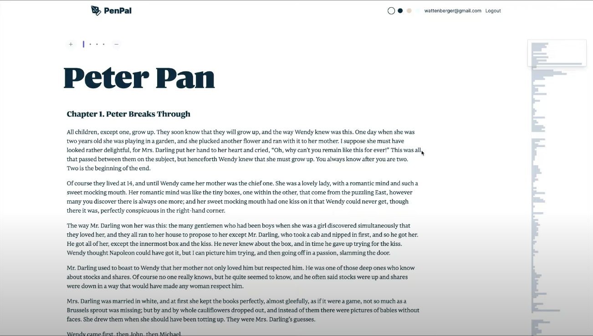 </div> <p style="font-size: 14px;"> <a href='https://www.youtube.com/watch?v=PAy_GHUAICw'>Climbing the Ladder of Abstraction: Amelia Wattenberger</a> </p> --- # Semantic Zoom <div style="display: flex; justify-content: center;"> 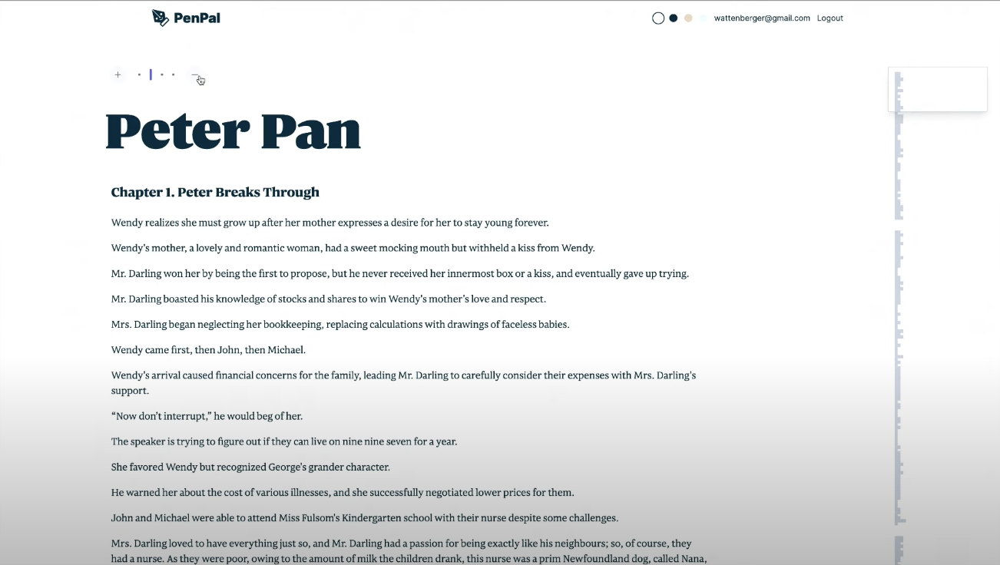 </div> <p style="font-size: 14px;"> <a href='https://www.youtube.com/watch?v=PAy_GHUAICw'>Climbing the Ladder of Abstraction: Amelia Wattenberger</a> </p> ??? Another great example of a basic capability from LLMs to summarize information in useful ways and then allowing that to enhance your experience of accessing and handling information. --- # Latent Space Style Exploration of Ideas with Luminate <div style="display: flex; justify-content: center;"> 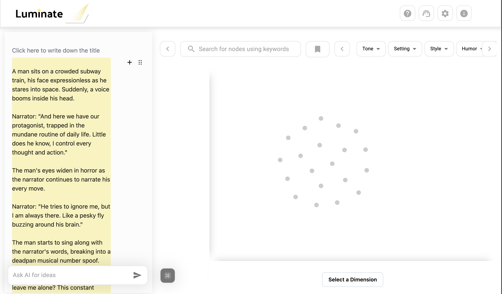 </div> ??? They used some simple prompting steps --- # Latent Space Style Exploration of Ideas with Luminate <div style="display: flex; justify-content: center;"> 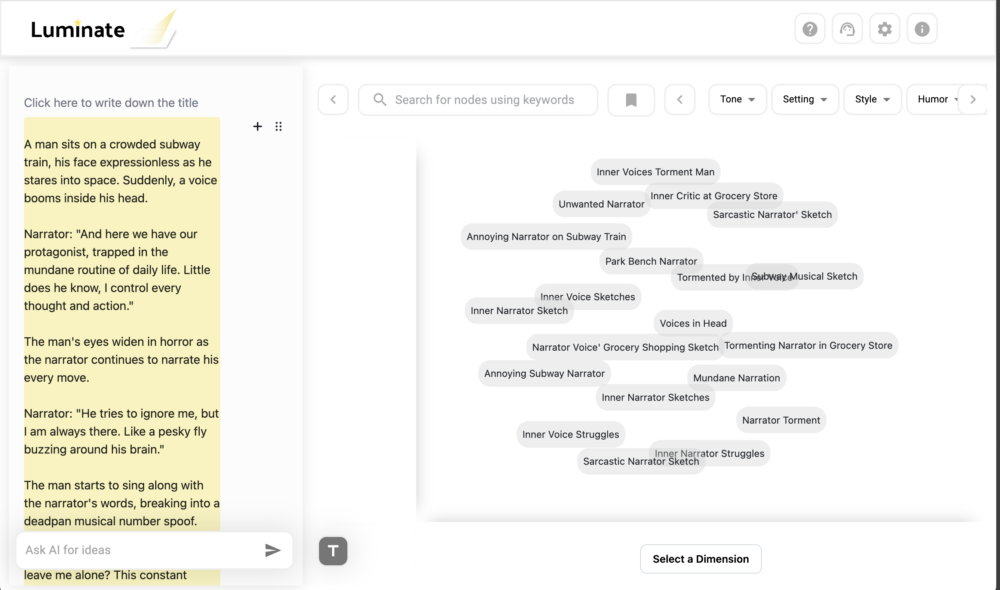 </div> --- # Latent Space Style Exploration of Ideas with Luminate <div style="display: flex; justify-content: center;"> 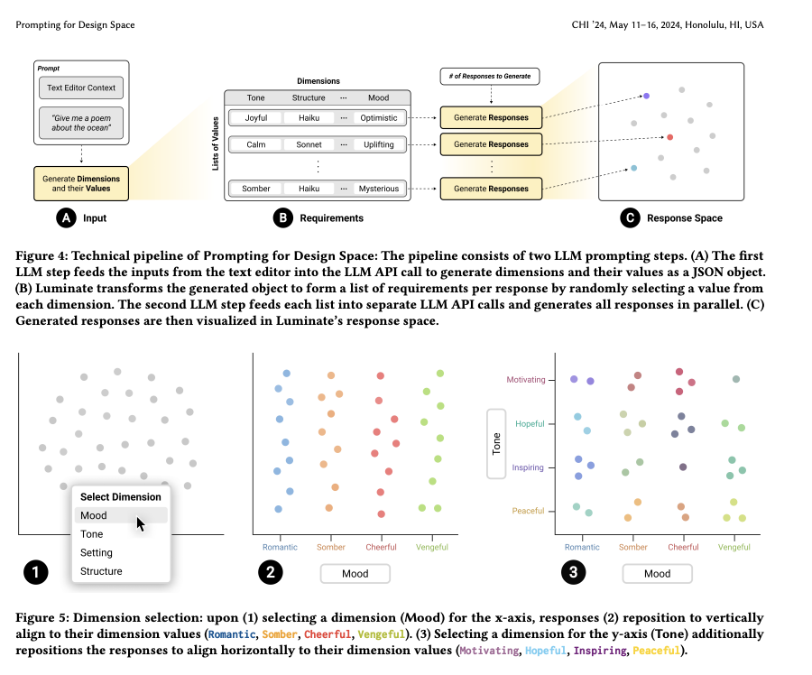 </div> --- class: center, middle # All built on top of simple prompting based atomic usage of AI --- class: center, middle # LLMs granular functionalities help us reduce cognitive load ??? The point is that we these usecases are good examples of basic LLM functionality working as a tool to reduce intrinsic cognitive load and help with managing complexity - `This workshop is about finding the opportunities for granular application of AI to research problems/contexts and challenges` --- class: center, middle # What are the LLM tangibles in Research? --- # Large Language Models are Zero Shot Hypothesis Proposers ## The basic loop first <div style="display: flex; justify-content: center;"> 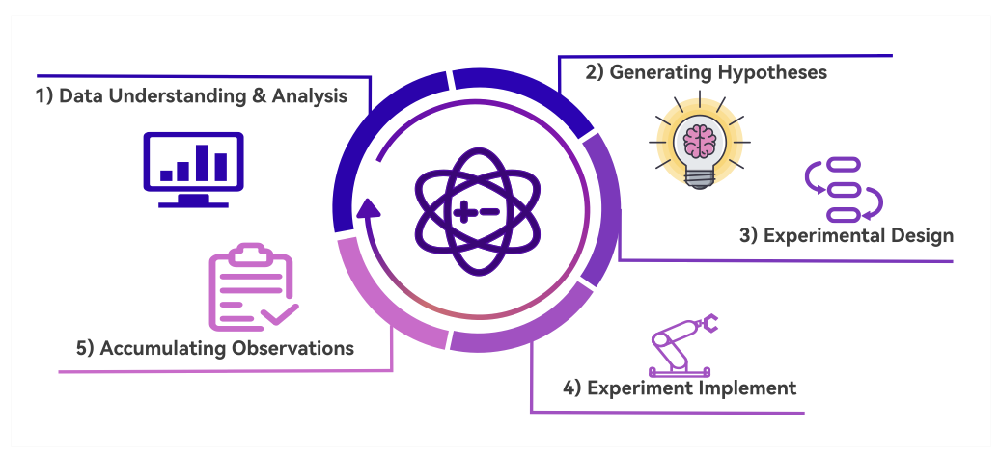 </div> --- # Cool paper on this topic ## ['Machine-assisted mixed methods: augmenting humanities and social sciences with artificial intelligence'](https://arxiv.org/pdf/2309.14379) --- # Some ideas <div style="display: flex; justify-content: center;"> 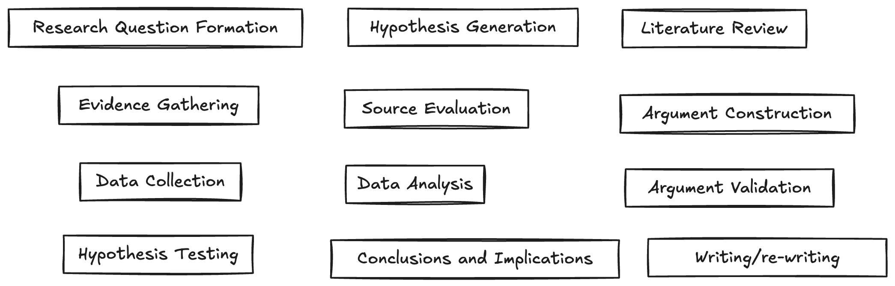 </div> --- class: center, middle # Level 0: Prompts for Better Research Workflows ??? - Granular AI - Atomic Usage of AI to research workflow scenarios - These examples are all about powerful functionality coming from UI inovation on top of simple atomic and granular AI capabilities (summarization, ensemble generation, etc...) --- # Level 0: Prompts for Better Research Workflows 1. System messages as utility functions -- 2. Manage prompts as tools to perform granular actions that are -- 1. Reliable -- 2. Easily verifiable -- 3. Produce at least one meaningful transformation of the data --- # Hands On: Level 0 - Prompts for Better Research Workflows 1. I will share some examples from my notebooks 2. Go to Slack channel and share your own ideas <div style="display: flex; justify-content: center;"> </div> --- class: center, middle # Level 1: Research Primitives with Pydantic for Efficient LLM-based Research ??? Towards an Index of Scientific Cognitive Procedures? --- class: center, middle # Researcher controlled semantic data structures? ??? Could we implement researcher controlled semantic data structures to guide LLM-based cognitive procedures when doing research? --- # Level 1: Research Primitives with Pydantic for Efficient LLM-based Research 1. Leveraging OpenAI structured outputs + Pydantic for semantic data structures to repreesent these primitives -- 2. Define data structure in Pydantic to capture the 'meta-components' of the research process -- 1. Each should have an atomic definition -- 2. They should be made for composability -- 3. Composing them should yield powerful functionalities --- # Hands On: Level 1 - Pydantic & Data Structures for Research Primitives 1. I will share some examples from my notebooks 2. Go to Slack channel and share your own ideas so maybe we can implement some right now! <div style="display: flex; justify-content: center;"> </div> --- class: center, middle # Cool extra stuff for fun! (level 2 agentic workflows + cool tools) --- # Agentic Workflows, Cool Tools, Experimenting 1. Iterative Research reports (gpt-researcher, live demo) -- 2. Re-write terminal tool demo -- 3. Composability of llm generations with [llm-cli](https://github.com/simonw/llm) -- 4. --- class: center,middle # Concluding Thoughts & Questions - What we want ultimately is useful and reliable transformations that help us get to progressively reduce intrinsic cognitive load -- - How can we make incoherence evident without the disguise of hallucination? -- - How can we integrate evaluation at the individual usage level? -- - What are the best principles/paradigms for effective real time collaboration with LLMs? --- # References - https://arxiv.org/pdf/2310.10808v1 - https://www.youtube.com/watch?v=PAy_GHUAICw - [LLMs as Zero-Shot Hypothesis Proposers](https://www.semanticscholar.org/paper/Large-Language-Models-are-Zero-Shot-Hypothesis-Qi-Zhang/713b604fb9cdd6631074cbd6bf36db029031992e) - Luminate: Structured Generation and Exploration of Design - [Space with Large Language Models for Human-AI Co-Creation](https://arxiv.org/pdf/2310.12953) - [Machine-assisted mixed methods: augmenting humanities and social sciences with artificial intelligence](https://arxiv.org/pdf/2309.14379) - ---